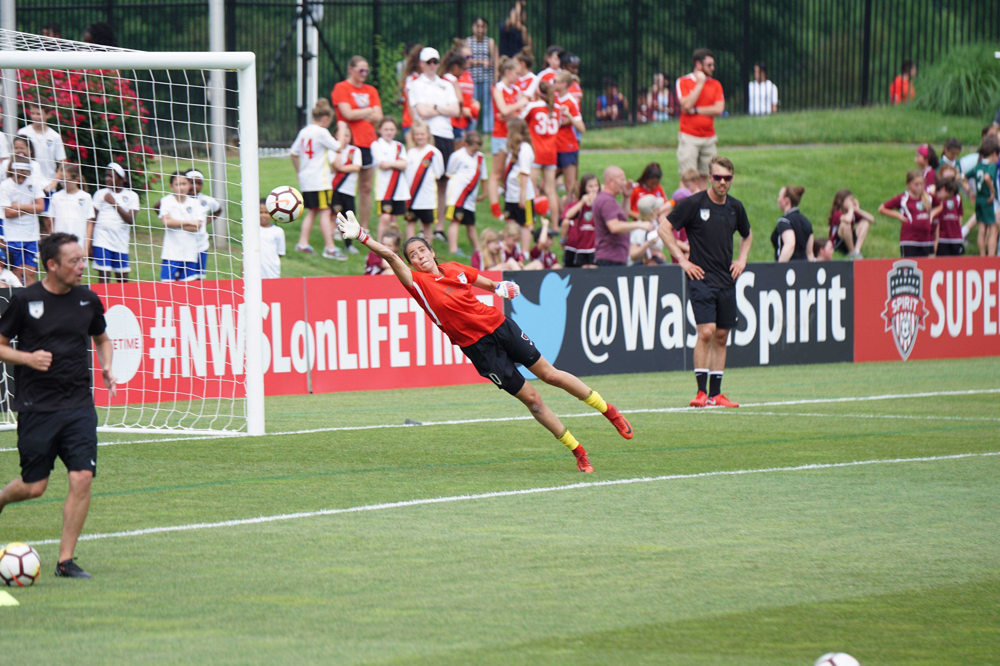

Manuel Neuer has already won a host of individual awards in his glittering career, so this latest honour should come as no surprise. But as most of the bigger prizes came in the first half of the past decade, some critics had begun whispering that he had peaked with that legendary contribution to Germany’s 2014 FIFA World Cup Brazil™ win.
Neuer, needless to say, has spent the past couple of years proving that he’s still the best sweeper-keeper in the business. Outstanding displays in the UEFA Champions League inspired Bayern Munich to glory, while a meagre tally of 31 goals conceded in 33 Bundesliga matches helped maintain the Bavarians’ domestic dominance.
Such feats have led to Neuer becoming the fourth winner of The Best FIFA Men’s Goalkeeper Award.
